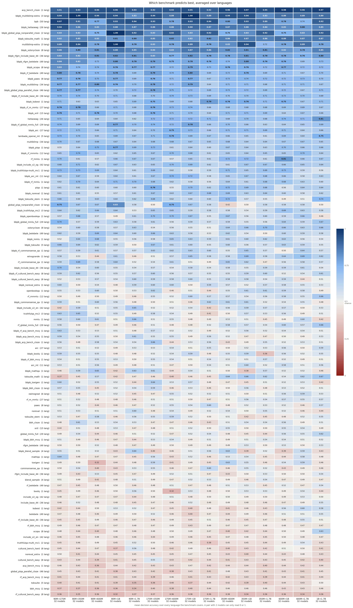
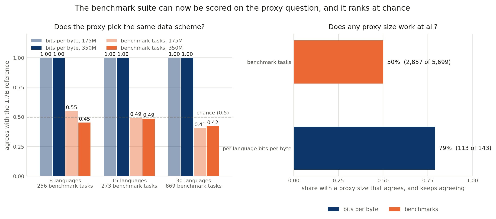
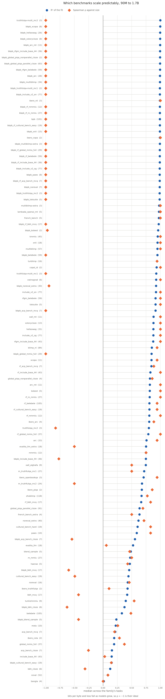
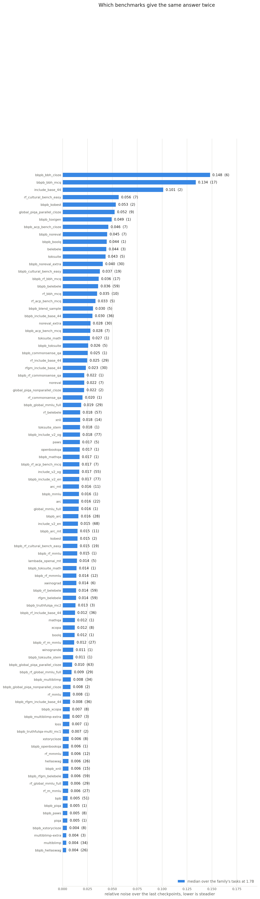
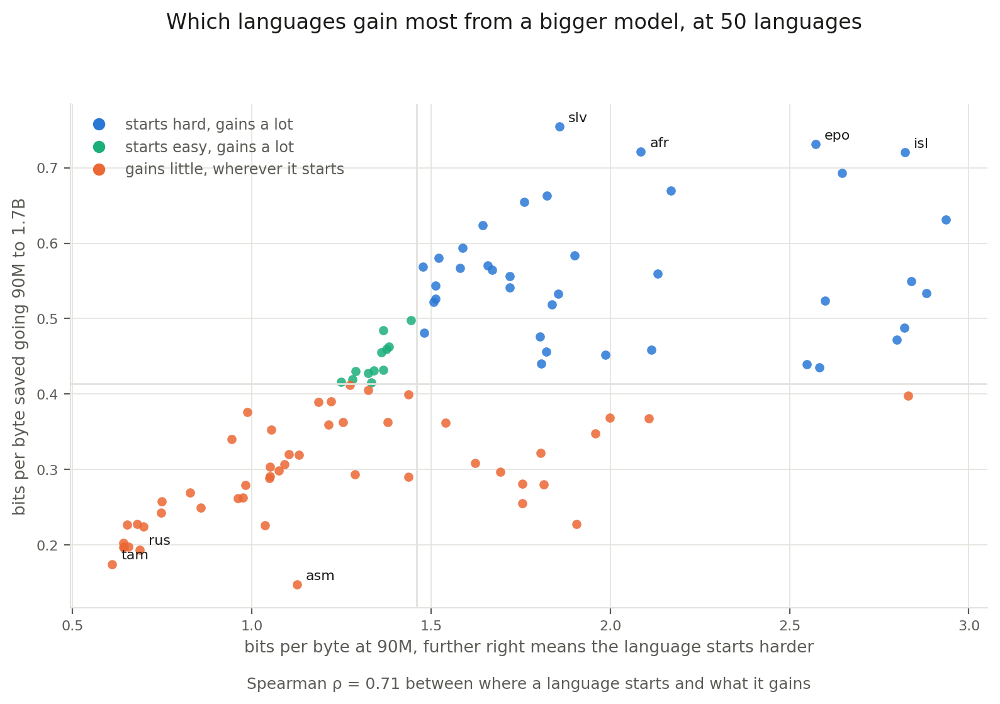
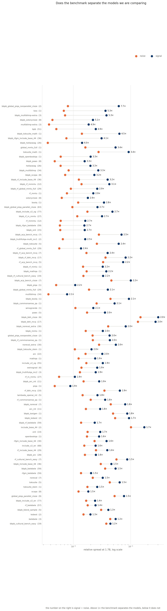
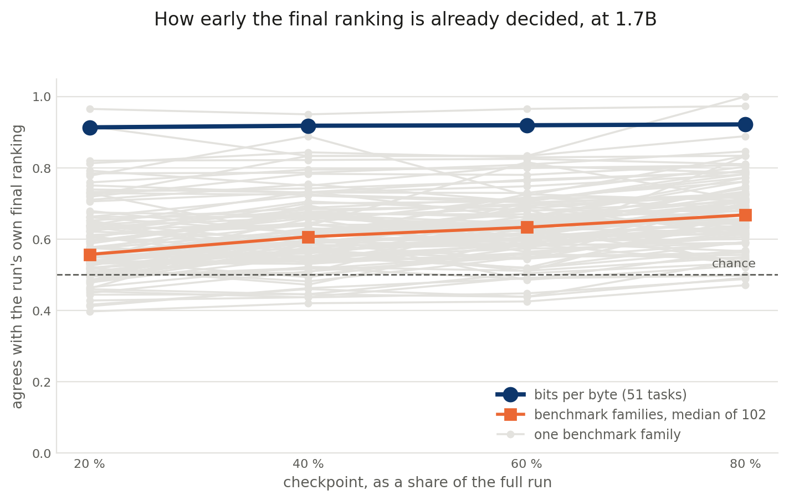
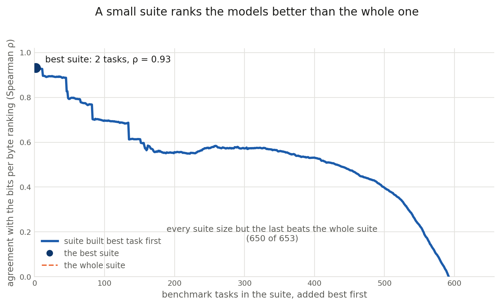
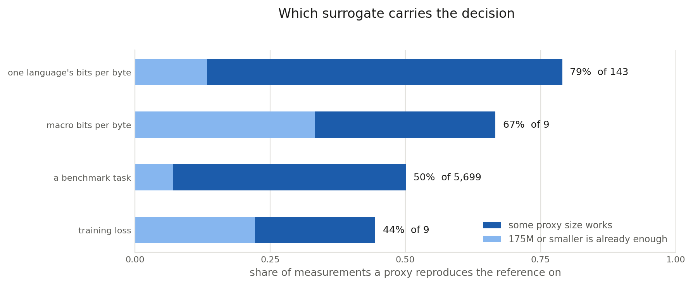
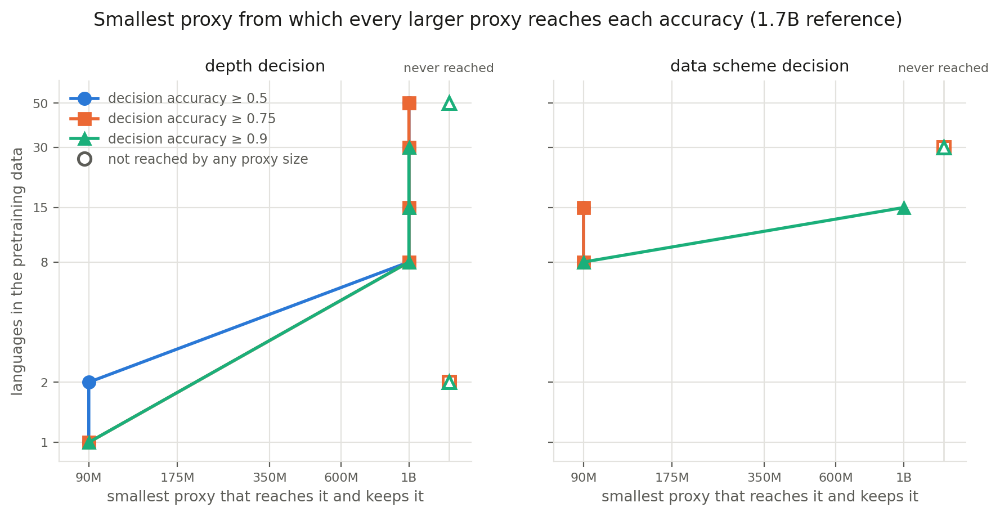

Every research question the ladder has been asked, what each one answered, and how the number was produced. On the 10 October 2026 ladder report, all fourteen programme questions are answered, and four of the five proposed ones are now partly answered by later analyses.
Ladder 90M–1.7B × K ∈ {1,2,8,15,30,50}, plus six 3B cellsCells 219 in report, 218 complete, 218 healthySource msnr-data/ladder-reportRun 2026-10-10 04:31
Part one
The original programme
Seven questions carried over from the Signal-and-Noise framework and adapted to the ladder, RQ0 to RQ6. The labels on this page are the programme's own. The analysis folders now run from rq00 to rq14 in seven themes (A predictivity, B cheap measurement, C generalisation, D benchmark improvement, E past the reference, F the recommendation, G checks on the ladder), and the paper groups them into measurability, agreement and anticipation. Each question below names the folder that now answers it. Every folder sits under src/signal-and-noise/analysis/ and runs in dependency order from run_all_predictivity.sh.
RQ0Answered
How do scores move with compute, and which benchmarks are above chance at all?
TL;DR
Of the 933 benchmark tasks with a chance level in trained languages, 40 % are above chance at 90M and 64 % at 1.7B, and 34 % never pass. The answer format decides the gate more than the option count does: letter-format Belebele passes in 3 of 59 trained languages at 1.7B, its cloze twin in 57.
Setup and method
A run clears chance on a task when the one-sided 95 % Wilson lower bound of its accuracy over the task's items is above the chance level. A (task, size) cell is above chance when at least half of the runs of that size that train the task's language clear it. The gate reads the final checkpoints of the 192 seed-1904 runs of the predictivity pool, 90M–1.7B (folder rq00_gate_and_curves).
above_random(run, b) ⟺ Wilson₉₅,lower( acc(run, b), n_items(b) ) > 1/n_options(b) above_random(b, s) ⟺ , at least half of the size-s runs that train b's language clear it per-language BPB and the bBPB twins have no chance level and are never gated
The fixed +0.05 margin is gone. The margin a run now needs shrinks with the item count, from +0.006 on the 14,042-item MMLU families to +0.157 on CulturalBench-easy (25 items). Every downstream cell that fails the gate is set to NaN, so the gate propagates to every other RQ. Script: rq00_gate_and_curves/above_random.py, curves in run_apertus.py.
Results
Family, trained languages, 1.7B
Letter format
Cloze twin
McNemar, all languages
Belebele
3 / 59
57 / 59
82 : 1
Global-MMLU
1 / 29
29 / 29
34 : 0
INCLUDE
3 / 36
29 / 36
29 : 1
Each discordant count has p < 10⁻⁷. Two- and four-option trained tasks pass at similar rates at 1.7B (83 of 122, 68 %, against 488 of 759, 64 %), so the answer-count split of the September report was mostly a format effect, plus 304 untrained two-option minimal-pair tasks.
Survivors grow at every size step: 377, 411, 447, 498, 551 and 599 of the 933 trained tasks from 90M to 1.7B, and 356 pass at all six sizes. Eight of the 40 original benchmarks never pass in any trained language, among them MMLU and CommonsenseQA in their letter format, TruthfulQA, BBH, ACP-Bench and CulturalBench-hard. Ten pass at every size in every language, among them HellaSwag, MultiBLiMP and OpenBookQA. On the six configurations trained to 3B, the gate keeps 772 of 927 tasks at 3B against 607 at 1.7B.
Of the 74 tasks shared with the public models, 27 are at chance at every ladder size, and the public models read 24 of them at 1.7B or below. Much of what the ladder cannot read is therefore a size floor rather than a property of the benchmark.
Follow-ups
Now answered. The Wilson rule above replaces the fixed margin and states a false-positive rate per task.
Now answered. A majority-class chance level, applied to the tasks with fixed answer labels, lowers the share above chance by 1.4 to 2.7 percentage points depending on the size, and moves the downstream decision accuracy by at most 0.006 (rq00_gate_and_curves/majority_chance/).
The public models' mask still uses the retired +0.05 rule, so the size-floor reading is provisional.
RQ1Answered
Does a benchmark rank design variants at a small size, or an early checkpoint, the way the reference does?
TL;DR
On benchmark accuracy, a fully trained proxy ranks the design variants barely better than chance: DA-size against the 1.7B reference is 0.51–0.57 from 90M to 1B. Per-language BPB reads 0.91–0.95 at every proxy except 600M (0.73).
Setup and method
Models are the seed-1904 runs of every language setting, ladder and data build, 90M–1.7B. A pair is two design variants at the same size. The reference is the final checkpoint of the 1.7B run of each configuration, at every K (folder rq02_decision_accuracy). Three definitions:
DA-size(b, s) = share of variant pairs ordered the same by the final checkpoint at size s and by the 1.7B final checkpoint DA-ckpt(b, f@s) = share ordered the same at checkpoint f and at the final one, within size s DA-goal(b, f@s) = share ordered the same at checkpoint f of size s and at the 1.7B final f runs over the evaluated tenths of a run, a decision cell needs at least three pairs, cells at chance at the proxy or at 1.7B are dropped
Multilingual tasks are scored only on the runs that train the language. Pairs are multi-axis by default (a pair may differ on several design axes), and the mono-axis pairs isolate one decision. Script: rq02_decision_accuracy/compute_da.py.
Results
DA-size against 1.7B
90M
175M
350M
600M
1B
Benchmark accuracy
0.51
0.53
0.53
0.54
0.57
Accuracy and bBPB twins
0.62
0.60
0.60
0.60
0.62
Per-language BPB (50 languages)
0.95
0.95
0.91
0.73
0.92
Within a run, on the tasks the paper's reliability filter keeps, early checkpoints recover 61–67 % of the final decisions and 84–92 % at 4.5C. Part of that rise is persistence. Two seeds of one configuration, which have nothing to decide, already agree on 78–80 % of the pairs at 90 % of training, against 82–86 % for real design pairs. Training a proxy longer does not close the gap to the reference: its agreement with 1.7B stays flat across its checkpoints.
Two checks on the reference. Shuffling the proxy scores puts chance at 0.49 for the benchmark tasks and their twins, so their observed 0.57–0.59 sits only 0.08–0.10 above it, and only 8–10 % of the cells beat their own null. Keeping only the pairs the 1.7B reference separates by more than two seed standard deviations of a difference raises their DA-size to 0.71–0.73, on 25 % of the pairs. Against a 3B reference on six configurations, accuracy still reads 0.48–0.53, and per-language BPB reaches 0.78 or more from every proxy.
The 600M dip on per-language BPB comes from a seed draw. The deep seed-1904 600M runs sit about one seed standard deviation above their own scaling trend, which reverses the depth and activation pairs, whose 1.7B gap is itself only about one seed standard deviation. On the pairs the reference separates by more than two seed standard deviations, 600M agrees at 0.99 like every other proxy (mean over languages). The 600M shallow model is also not size-matched (+3.7 % parameters, about +15 % compute). The data are kept as trained and the pairs are flagged.

Decision accuracy by benchmark family and size pair, averaged over every language the family covers. Column labels give the size pair and the number of models behind it (31 or 32).
Follow-ups
Now answered. The 1.7B reference is trained at every K, with 31 finished runs, so every 1.7B column has a full population.
Partly answered. The permutation null (rq02_permutation_null) and the decisive pairs (rq02_decisive_pairs) replace the flat 0.5 and the all-pairs denominator. A rank correlation over variants is still untried.
The reference is one run per configuration. At 1B two seeds of the same English designs agree on only 53–60 % of the decisions, so the reference's own seed bounds what any proxy can reach.
RQ2Answered
Which of 22 SNR definitions predicts decision accuracy, and does the choice survive a seed swap?
TL;DR
The relative-spread definitions lead as a block. rel_std, rel_mpd and rel_dispersion reach a mean per-language r = 0.51–0.52 with DA-size and 0.55–0.56 with DA-ckpt, and rel_std wins by less than 0.01. The global ranking survives a seed swap (Spearman ρ = 0.72 under DA-ckpt, 0.55 under DA-size), and the per-language picks do not.
Setup and method
Twenty-two spread statistics in five families (dispersion, relative spread, discrepancy, robust, depth) are computed per (task, size) from the variants' final scores and divided by the checkpoint noise. Each is then correlated per language against both DA definitions and averaged over the 50 trained languages (folders rq03_noise_and_snr and rq04_surrogates).
signal(b,s) = spread over the design variants' final scores (22 statistics) noise(b,s) = residual σ around a line through each run's checkpoints at 80–100 % SNR = signal / noise score = mean over languages of Pearson r( log₁₀ SNR , DA )
Two technical decisions changed the answer historically, both recorded in src/signal-and-noise/CLAUDE.md. Variants are ranked by signed Pearson r, never R², because R² conflates +0.5 with −0.5 and floats anti-signals to the top. And _is_parent_task applies, because the subject facets of Global-MMLU are statistical replicates that would weight whichever variant tracks the subject decomposition six times over.
The seed holdout trains the ranking on the replicate seeds (64 and 313 at 175M and 600M, 28 and 1797 at 1B) and tests it on seed 1904 of the same 10 cells. Scripts: run_apertus_snr_variants.py, compare_seed_splits.py.
Results
Variant
r vs DA-size
r vs DA-ckpt
Overall
rel_std(framework default)
0.521
0.560
0.540
rel_mpd
0.520
0.560
0.540
rel_dispersion
0.505
0.548
0.527
iqr
0.492
0.527
0.510
dist_std
0.454
0.536
0.495
discrepancy
0.261
0.238
0.250
tukey
−0.015
−0.116
−0.066
The relative-spread family wins 26 of 50 languages under DA-size and 31 under DA-ckpt, but the per-language winner is one of 11 definitions under DA-size and one of 12 under DA-ckpt. The depth definitions are null or anti-signals.
Seed holdout. Spearman ρ on the global ranking is 0.72 under DA-ckpt and 0.55 under DA-size (on the holdout, DA-size is 175M → 600M). The per-language picks rest on English alone under DA-size, where both splits pick dispersion_shifted, and on English and Russian under DA-ckpt, where only Russian keeps the family and neither keeps the exact variant. The recommendation that carries forward is a variant family, never an exact variant or a per-language argmax.
Follow-ups
Partly answered. The holdout now rests on 10 cells instead of six, and the global ranking holds. The per-language picks still rest on one or two languages. See P2.
Noise here is checkpoint noise. RQ6 measures seed noise at a median 1.75× the detrended checkpoint noise, so every SNR in this table is optimistic by roughly that factor. An SNR variant with the seed noise as its denominator is the open follow-up.
RQ3Answered
Does our SNR agree with AllenAI DataDecide on the tasks both corpora evaluate?
TL;DR
At 1B all 9 English tasks shared with DataDecide clear the gate, and both corpora order them alike: Spearman ρ = 0.77, Pearson r of log₁₀ SNR 0.77 (p = 0.016). Our rel_std SNR is 1.2–4.2× lower than DataDecide's, so only the task order compares across corpora, never the SNR level.
Setup and method
Cross-corpus Pearson r and Spearman ρ of log SNR over the English tasks both corpora evaluate, at matched sizes (folder rq07_external_frameworks). Script: rq07_external_frameworks/analyze.py, fed by build_allenai_variants.py.
The shared tasks are ARC Easy, ARC Challenge, HellaSwag, OpenBookQA, PIQA, Winogrande, BoolQ, and MMLU and CommonsenseQA through their cloze twins. DataDecide's signal is a dispersion over 25 data recipes, and ours is over language settings, data schemes and architectures, a different axis. This may explain why the levels differ while the order agrees.
Results
Nine points make the agreement indicative rather than conclusive. The English-only check (rq13_english_only) compares the K = 1 cells with DataDecide on the same tasks: they beat every other language setting on English accuracy, but by little (1.1 points at 1.7B on 40 tasks).
Follow-ups
Now answered. The DataDecide-side table loads, and the comparison runs in the driver.
Because the axes differ, a matched-axis comparison is still open: recompute DataDecide's SNR over a subset of its recipes chosen to have a dispersion similar to ours.
RQ4Answered
Can a language or subject subset beat the full benchmark's SNR?
TL;DR
Only against the wrong baseline. The best language prefix beats the full set in 221 of 254 swept (benchmark, size) cells, but beats the 95th percentile of random subsets of the same size in only 94. Picking items by SNR wins SNR and loses the reference: held out at 90M–1B its DA is 0.32–0.37, against 0.53–0.57 for the full set.
Setup and method
For each multilingual family, the per-language tasks that pass the gate are ranked by their own SNR, and each prefix of that ranking is scored. The best prefix is compared with 100 random subsets of the same size. Three cases: a language subset per benchmark, Global-MMLU subjects averaged over languages, and Global-MMLU subjects per language (folder rq08_subset_selection). Script: rq08_subset_selection/smooth_subtasks.py.
Results
Case
Task
Size
Full → best
Gain
Null p95
per benchmark
bbpb_rf_belebele
1B
3.08 → 5.78
+2.71
5.29
per benchmark
bbpb_paws
175M
3.49 → 6.00
+2.52
4.95
per benchmark
arc
350M
2.86 → 5.36
+2.51
5.36
per benchmark
hellaswag
600M
3.20 → 5.51
+2.31
4.25
per benchmark
arc
1.7B
3.37 → 5.58
+2.21
4.05
The largest raw gains are not the largest gains over the null. ARC at 350M (+2.51, arc_easy alone) gains nothing over it, while ARC at 1.7B gains +1.53. Half of the twelve largest raw gains are bBPB twins. The share of benchmarks that beat the null does not grow with size (0.33–0.43). The Global-MMLU subject cases still come from the 21 September tables and are not current.
Follow-ups
Now answered. The random-subset null replaces the comparison with the full set.
Now answered. Held out, SNR-picked items lose the reference, so choosing and scoring on the same data was the optimistic part.
Rerun the two Global-MMLU subject cases on the current report.
RQ5Answered
Which benchmark design features predict reliability?
TL;DR
Option count is the only family-level design axis that reaches p < 0.05. The six two-option families have a median SNR of 1.91 against 0.75 for the 18 four-option ones (H = 11.32, p = 0.003, still under 0.05 after a Bonferroni correction). The two-option families are also all non-lettered, so option count and format cannot be told apart.
Setup and method
A family's SNR is the median over its per-language tasks at the 1.7B reference, with the mean pairwise distance between designs as the signal, for the 29 families that clear the gate. Families are described by curation, source, task format, option count, reading passage, domain and item length, and tested with a family-level Kruskal–Wallis and with Spearman ρ and bootstrap intervals over whole families (folder rq09_benchmark_design). Script: rq09_benchmark_design/analyze.py.
Results
Family
Median SNR
n
Format
Options
multiblimp
2.39
34
minimal pair
2
hellaswag
2.29
26
completion
4
xstorycloze
2.18
8
completion
2
global_piqa_nonparallel_cloze
2.06
2
completion
2
xwinograd
1.77
6
completion
2
paws
1.55
5
classification
2
xcopa
1.32
8
completion
2
xnli
1.01
14
classification
3
arc
0.73
22
cloze MCQ
4
include_base_44
0.66
3
letter MCQ
4
rf_belebele
0.61
57
cloze MCQ
4
belebele
0.51
3
letter MCQ
4
Kruskal–Wallis over the 29 families: curation H = 2.77 p = 0.74, source origin H = 0.09 p = 0.95, option count H = 11.32 p = 0.003, task format H = 7.68 p = 0.10, reading passage H = 0.06 p = 0.81. HellaSwag, a four-option benchmark, is the exception to the split: second by SNR (2.29) and first by DA-size (0.75). The same items have a higher SNR in their original language, as INCLUDE v2 in the item's own language reads 0.89 against 0.68 for its English translation. No characteristic orders the benchmarks by DA-size in both readings (the reliable tasks and every gated task).
Follow-ups
Now answered. With 29 families instead of nine, the test resolves the option-count axis.
Option count and format still move together. A two-option lettered task would separate them.
Testing on survivors conditions on the gate. A model over every family with gate status as a covariate would use the discarded information.
RQ6Answered
Which proxy sizes rank an intervention the way the reference does, at each language count?
TL;DR
On per-language BPB, every proxy from 90M reads the temperature decision at 0.95–0.99 and the language-list decision (scheme A vs B) at 0.77–1.00 against the 1.7B reference. On the gated benchmarks only three decision cells reach 0.75, all at K = 1, and the scheme decision reads 0.40–0.55 at 175M and 350M.
Setup and method
Six single-axis decisions, each against the baseline (deep, scheme A, T = 1): depth, data scheme A vs B, data scheme A vs C, temperature T = 1 vs 3, activation and optimizer, read on every seed of every ladder and data build (folder rq05_design_decisions). Script: rq05_design_decisions/analyze.py.
i. Intervention DA. With two levels, pairwise agreement reduces to sign agreement:
DA(K, s) = share of population items i with sign(xiA−xiB)|s = sign(xiA−xiB)|1.7B populations: bpb_trained (languages both levels train), benchmark (gated at proxy and reference), bpb_macro, loss
ii. Scaling-law error (now in rq01). A power law fitted on the proxy rungs, predicting the 1.7B BPB
rel_error = (predicted − observed) / observed
iii. Effect vs noise (now in rq03). |Δ| ÷ seed σ, and ÷ detrended checkpoint σ detrended because under WSD the final window is still descending
The reference is the 1.7B run at every K since 26 September. Depth exists at every K, scheme A vs B at K ∈ {8, 15, 30} (plus the ZH swap at K = 2 and DCLMP at K = 1), scheme A vs C as the ES swap at K = 2 and FWEB at K = 1, temperature at K ∈ {15, 30, 50} and activation at K ∈ {8, 15, 30}. The optimizer has no 1.7B result at both levels yet.
Results
Per-language BPB, DA-size against 1.7B, mean over K:
Proxy
Depth
Scheme A vs B
Temperature
Activation
90M
0.97
1.00
0.96
0.96
175M
0.99
1.00
0.99
0.90
350M
0.49
1.00
0.95
0.98
600M
0.00
0.94
0.98
0.34
1B
0.95
0.77
0.97
0.97
The 600M depth pairs are not size-matched and carry the seed draw described in RQ1. On the gated benchmarks the same decisions read 0.45–0.63 at every proxy (depth 0.47–0.57, scheme A vs B 0.45–0.51, temperature 0.61–0.63, activation 0.48–0.56). Only three cells reach 0.75, all at K = 1: 350M on the depth decision and on the DCLMP swap (0.79 each, on 14 tasks) and 600M on the FWEB swap (0.75, on 133 tasks). On the items decided outside seed noise, the final-checkpoint benchmark DA rises only from 0.54 to 0.60.

Left, the scheme decision at 175M and 350M against the 1.7B reference: per-language BPB agrees at 1.00 at K = 8, 15 and 30, the benchmarks at 0.40–0.55. Right, the strict test, a proxy size that agrees and keeps agreeing at every larger size: 79 % of 143 BPB comparisons pass, against 49 % of 5,398 benchmark ones.
Scaling-law error. A power law fitted on the proxies over-predicts the 1.7B BPB in all 318 per-language fits, with a median error of 7.7 % from the rungs up to 350M, 4.4 % up to 600M and 2.3 % up to 1B.
Effect against noise. On the replicated cells, seed noise is a median 1.75× the detrended checkpoint noise (4,650 cells). Depth's median effect is 2.12× the checkpoint noise but 1.30× the seed noise, and no design axis clears twice the seed noise in half its cells: depth 1.30, scheme A vs B 1.22, A vs C 1.66, temperature 1.80, activation 1.10. At the reference itself, depth is 1.3 seed standard deviations on BPB and the language lists 1.6, against 5.4 for temperature, so most decisions are barely decided at 1.7B.
Follow-ups
Now answered. The 1.7B reference exists at every K, and every decision except the optimizer has a matched twin there.
Now answered. The benchmark pass rate has its null in rq02_permutation_null: chance sits at 0.49, and 8–10 % of the benchmark cells beat it.
The optimizer decision (AdEMAMix vs Muon) still needs its 1.7B evaluation at both levels.
Part two
How good are our instruments?
Four questions asked of the benchmarks themselves, before any result is quoted with them. The figures come from documents/figures/fig_rqs.py on the same published ladder report, and the text follows the matching analysis folder.
A1Answered
Which benchmarks scale predictably?
TL;DR
Where accuracy is above chance it scales log-linearly: the median size-fit R² is 0.87 over 390 benchmark tasks and 1.00 for per-language BPB. The letter-format Global-MMLU, INCLUDE and Belebele have no fit at all, because they stay at chance wherever a fit is possible. Their reformulated versions fit at family medians of 0.84–0.92.
Setup and method
Each task's final score is fitted against log non-embedding parameters across the six rungs 90M–1.7B, on the deep scheme-A seed-1904 cells, one fit per K, using only the sizes where the task is above chance. A fit needs three sizes (folder rq01_scaling_predictability). The 90M and 175M rungs were retrained at batch 84 and 168 so that the optimizer's slow average fits inside the run (see P4), and 90M is a working rung again.
y = b · log₁₀ N + a fitted by least squares over the gated sizes R² = 1 − SSres / SStot ρ = Spearman( log₁₀ N , y ) reported as the median over each family's fits, input is rq1_fits.csv
Sign matters here. Bits per byte and training loss fall as models improve, so ρ = −1 is their ideal, not a failure.
Results
Family
Median R²
Median ρ
Fits
bpb
0.996
−1.0
106
arc
0.984
+1.0
36
truthfulqa-multi_mc1
0.972
−0.75
4
lambada_openai_mt
0.959
+1.0
22
xstorycloze
0.959
+1.0
28
multiblimp
0.944
+1.0
77
rfgm_include_base_44
0.922
+0.94
49
hellaswag
0.884
+1.0
64
rf_belebele
0.852
+0.94
122
rf_global_mmlu_full
0.837
+1.0
74
global_piqa_parallel_cloze
0.593
+0.5
10
belebele, include_base_44, global_mmlu_full
no fit
n/a
0
TruthfulQA is the instructive failure: a tight fit with a negative slope on the sizes where it is above chance (90M to 350M), so it reliably gets worse as models grow. This is consistent with the inverse scaling reported for TruthfulQA, and it shows why R² alone is not enough. Along both axes, 311 of the 420 accuracy and BPB tasks with a fit (74 %) are predictable across model size and across training, and none across training only.

R² of the log-parameter fit and Spearman ρ against size, median across each family's tasks. The figure fits every size without the gate, so the letter-format families appear there with a low R², where the table, read on the gated sizes, has no fit.
Follow-ups
Now answered. The fit spans six rungs up to 1.7B on matched variants, and the gate separates "not scaling" from "at chance".
A saturating form (a loss-to-accuracy curve) is still untried and would separate "not scaling" from "already saturated".
A2Answered
Which benchmarks are stable?
TL;DR
At the 1.7B reference, per-language BPB (0.004), multiblimp (0.004), hellaswag (0.005) and xstorycloze (0.006) give nearly the same answer twice. The letter-format include_base_44, at 0.094 on its three ungated tasks, is about twenty times noisier.
Setup and method
Relative noise at 1.7B is the residual standard deviation around a straight line through a run's checkpoints at 80, 85, 90, 95 and 100 % of training, divided by their mean. It is the denominator of every SNR quoted in this document (folder rq03_noise_and_snr).
noise_rel_std(b, s) = σresid, t ∈ {80, 85, 90, 95, 100 %}( ct ) / c̄ detrended because under WSD the final window is still descending, the raw σ is kept as a labelled variant
The window is the same fraction of every run, so no rung looks artificially quiet.
Results
Median relative noise per family at 1.7B, over the tasks above chance there: bpb 0.004, multiblimp 0.004, hellaswag 0.005, xstorycloze 0.006, loss 0.007, xcopa 0.012, xwinograd 0.014, lambada_openai_mt 0.015, paws 0.016, arc 0.016, xnli 0.017, rf_belebele 0.018, rfgm_include_base_44 0.023, belebele 0.044, global_piqa_parallel_cloze 0.051, include_base_44 0.094. The bBPB twins are usually steadier than their originals, for example HellaSwag at 0.003 against 0.005.
Stability alone is not a virtue, since a benchmark stuck at chance is perfectly stable. It becomes meaningful only next to the signal, which is A4.

Relative noise over each run's last checkpoints at 1.7B, median across each family's tasks. Lower is steadier.
Follow-ups
Partly answered. Seed noise is a median 1.75× the detrended checkpoint noise: 1.73× for the benchmark originals, 1.82× for the bBPB twins and 1.33× for per-language BPB. A per-family ranking on seed noise still needs more replicated cells.
Noise depends on size. Read at every rung, the median log₁₀ SNR peaks at 350M (0.41) and is lowest at 1.7B (0.23).
A3Answered
Which languages benefit most from increasing model scale?
TL;DR
All 100 validation languages improve from 90M to 1.7B, by a median 0.41 bits per byte. The ordering is the result: Spearman ρ = 0.71 between where a language starts and what it gains, so scale helps most where the model is currently worst.
Setup and method
On the 50-language mixture, deep architecture, scheme A, seed 1904, at each run's final checkpoint:
baselineℓ = BPBℓ(90M) , gainℓ = BPBℓ(90M) − BPBℓ(1.7B) K = 50 is used because it trains the most languages
The three patterns the team named map onto the plot's regions, split at the median of each axis rather than at an absolute floor, because no language regresses. Bits per byte is normalised by bytes, so it compares across languages with different tokenizer fertility, which is why it is used here rather than perplexity.
Results
Pattern
Reading
Examples
Starts hard, gains a lot
above median on both axes
slv, afr, epo, isl, and most of the right-hand cloud
Starts easy, gains a lot
below median baseline, above median gain
slk, azj, nob, dan
Gains little, wherever it starts
below median gain
asm, tam, rus, tha, hin
The correlation is the headline, and it points away from a rich-get-richer story: the languages that most need capacity are the ones a bigger model helps most. The language-transfer analysis (rq06_language_transfer) turns this into a prediction. The leave-one-language-out exponent predicts the 1.7B BPB from the 175M rung alone with a median error of 4.4 % on trained and 5.0 % on never-trained languages.

Where each language starts at 90M against what scale to 1.7B buys it, on the 50-language mixture.
Follow-ups
One chain at one language count. The same plot at K = 8 and K = 30 would say whether the correlation is a property of scale or of the mixture.
Partly answered. rq06_language_transfer separates trained from never-trained languages, and the size exponent transfers to both.
A4Answered
Does the benchmark distinguish the things we want to compare?
TL;DR
At the 1.7B reference, per-language BPB clears its own noise at 5.8×, hellaswag at 4.0× on 26 tasks and multiblimp at 2.3× on 34. Five families sit below 1× (KoBEST, NorEval, NorEval extra, TokSuite and Winogrande), meaning they vary more between late checkpoints of one model than between the models we are trying to tell apart.
Setup and method
Signal is the spread across the design variants at a fixed size, and noise is the spread within one run. Both are relative, so the ratio is dimensionless and compares across benchmarks with different score scales.
signal_rel_std(b,s) = σvariants( final score ) / mean noise_rel_std(b,s) = detrended σ80–100 % ckpts( score ) / mean ratio = signal / noise this ratio is the rel_std SNR variant, reported at 1.7B
Results
Family
Signal
Noise
Ratio
Tasks
bpb
0.025
0.004
5.8×
51
loss
0.037
0.007
5.4×
1
hellaswag
0.021
0.005
4.0×
26
xstorycloze
0.019
0.006
3.1×
8
paws
0.036
0.016
2.3×
5
multiblimp
0.008
0.004
2.3×
34
arc
0.033
0.016
2.0×
22
xnli
0.030
0.017
1.8×
14
rf_belebele
0.025
0.018
1.4×
57
winogrande
0.017
0.017
0.97×
1
toksuite
0.046
0.048
0.96×
5
noreval
0.016
0.020
0.80×
7
noreval_extra
0.018
0.022
0.80×
30
kobest
0.021
0.028
0.75×
3
Read the counts. loss rests on one task and paws on five, while hellaswag on 26 and multiblimp on 34 are properly powered. The analysis table of rq03_noise_and_snr, on median log₁₀ SNR, agrees: HellaSwag has the highest benchmark SNR at 1.7B, and KoBEST, NorEval (extra), TokSuite and Winogrande are its only four families below the noise. NorEval sits just below 1× here because this figure divides two family medians. Signal also peaks below the reference: the median log₁₀ SNR is highest at 350M (0.41) and lowest at 1.7B (0.23), where 13 % of the ungated benchmark tasks are below the noise.

Signal against noise at 1.7B, both relative. The ratio is on the right, and above 1× the benchmark separates the models.
Follow-ups
Signal here is dispersion across language settings, data schemes and architectures. A benchmark could separate models on an axis this ladder does not vary, instruction tuning for instance, and still score below 1× here.
With seed noise as the denominator, every ratio shrinks by roughly 1.75×. BPB, HellaSwag and XStoryCloze would still clear 1× comfortably, and the families near 2× would sit at the boundary.
Part three
Can a cheap measurement stand in for the real one?
The three questions the ladder exists to answer. A proxy is only worth having if the decision it produces is the decision the expensive model would have produced.
B1Answered
How early can we predict final multilingual performance?
TL;DR
At the 1.7B reference, per-language BPB calls its own final ranking at 20 % of training (0.96 agreement, 0.99 at 80 %). The benchmark families climb slowly, from a median of 0.57 to 0.67, and only hellaswag (0.85 at 20 %) comes close to BPB. Part of every early agreement is persistence within a run, not a decision.
Setup and method
Within one size, the checkpoint nearest each fraction of the run is compared against that same run's final checkpoint. This is DA-ckpt from RQ1, read across the fractions rather than aggregated.
DA-ckpt(b, f@s) = share of variant pairs ordered the same at fraction f and at the end f ∈ {0.2, 0.4, 0.6, 0.8} da_early_fracs in the snr section of configs/models.json
Reported at 1.7B, the reference size. The benchmark families are drawn individually and as a median, in one muted colour, because they are one kind of thing and the contrast with bits per byte is the point.
Results
Checkpoint
Bits per byte (51 tasks)
Benchmark families, median
20 % of the run
0.958
0.567
40 %
0.979
0.619
60 %
0.982
0.634
80 %
0.986
0.672
The benchmark spread is wide at every fraction, 0.40 to 0.96 at 20 % and 0.40 to 1.00 at 80 %, because many families have only a handful of tasks. Two seeds of one configuration, which have nothing to decide, already agree on 78–80 % of the pairs at 90 % of training, against 82–86 % for real design pairs, so much of a late DA-ckpt is a run agreeing with itself.
The practical consequence is a budget one. Read on bits per byte, an early checkpoint already gives the run's own final ranking. Whether it gives the reference's ranking is a different question, and there the 600M proxy fails at every checkpoint.

Agreement between an early checkpoint's ranking and the same run's final ranking, at 1.7B.
Follow-ups
Now answered. Early and small together is DA-goal (rq02_da_vs_train_tokens): the 90M proxies' per-language BPB recovers 92 % of the 1.7B decisions at the first tenth of their run, after about 8 × 10⁶ tokens of a language, while benchmark accuracy stays flat at every checkpoint.
Under WSD the last 20 % is the decay phase. Whether 20 % of a run with a different schedule is equally decisive is untested.
B2Answered
What is the smallest evaluation suite that reliably predicts full multilingual model quality?
TL;DR
In sample, two tasks reach ρ = 0.93 against the bits-per-byte ranking, and the whole suite of 498 reaches only 0.26. Held out, a curated item subset does not beat the full task against the 1.7B reference, so the small suite is an in-sample result.
Setup and method
The reference is the ranking of models by their mean per-language bits per byte, sign-flipped so higher is better throughout. Benchmark tasks are added best-first, judged by how well each alone tracks that reference, and the growing suite is scored the same way.
refm = −meanℓ BPBm,ℓm over the seed-1904 runs of the predictivity pool solo(t) = Spearman( score·,t , ref ) → tasks sorted descending suite(k) = Spearman( mean of z-scored top-k tasks , ref ) z-scored per task so tasks on different scales contribute equally, a task must be scored on ≥ 60 % of models to enter
The z-scoring is the one substantive choice. Without it the average is dominated by whichever tasks have the widest raw range, which is an artefact of scale rather than a signal.
Results
Suite
Tasks
Spearman ρ vs the BPB ranking
Best single task
1
0.93
Best suite
2
0.93
Within 10 % of the peak
1 – 38
0.84 – 0.93
Everything
498
0.26
497 of the 498 suite sizes beat the whole suite. The tail is mostly tasks at chance, whose scores add noise and dilute the signal. Two analyses test the held-out version against the 1.7B reference. Items chosen on the proxies alone (rq14_proxy_item_selection) never beat the full task held out, with a DA-size of 0.49–0.55 against 0.53–0.57. Items picked by SNR (rq08_subset_selection) lose the reference, at 0.32–0.37 held out. A curated suite therefore helps against the BPB ranking in sample, and nothing yet shows it helps against the reference.

Agreement with the bits-per-byte ranking as tasks are added best first.
Follow-ups
Now answered. The held-out tests above say the in-sample gain does not carry over to the reference.
Best-first is greedy and ignores redundancy. A selection that rewards complementary tasks might find a better pair.
The reference here is bits per byte, which assumes BPB is model quality. The evaluation recipe (rq11_evaluation_recipe) asks the question against the 1.7B accuracy decision instead.
B3Answered
Which is the most informative surrogate?
TL;DR
Per-language bits per byte, on 79 % of 143 comparisons, against 49 % of 5,398 for benchmark tasks. Among statistics computed on the proxy alone, early-checkpoint agreement and the relative-standard-deviation SNR lead, at only ρ ≈ 0.53–0.60 with DA-size.
Setup and method
This is the min-model-size question the team sketched, aggregated across language counts. A surrogate works for a given measurement when some proxy size picks the reference's winner and every larger size keeps picking it. The monotonicity requirement is what makes it a usable rule rather than a coincidence.
min_predictive(x) = smallest s such that ∀ s′ ≥ s : sign(Δx)|s′ = sign(Δx)|1.7B NaN when no such size exists, the reference is the 1.7B run at every K
Computed by documents/figures/predictivity.py, with the intervention held fixed per language count: depth at K ∈ {1, 2, 8, 15, 30, 50}, scheme at K ∈ {8, 15, 30}.
Results
Surrogate
Some size works
175M or smaller is enough
Comparisons
Training loss
44 %
22 %
9
Per-language bits per byte
79 %
13 %
143
Macro bits per byte
67 %
33 %
9
Any benchmark task
49 %
7 %
5,398
Only the second and last rows are well powered. Training loss and macro bits per byte are single measurements per cell, nine comparisons each, and should not be ranked against the others on this evidence. By decision, per-language bits per byte works on 94 of 106 depth comparisons and 19 of 37 scheme ones, and benchmarks on 1,913 of 3,896 and 749 of 1,502. Benchmarks pass on 44–52 % at every language count (65 of 134 at K = 1, 72 of 165 at K = 2, 337 of 721 at K = 8, 495 of 985 at K = 15, 1,029 of 1,999 at K = 30 and 664 of 1,394 at K = 50).
Asked the way the paper asks it, as a statistic computed on the proxy alone that predicts DA-size, early-checkpoint agreement (ρ = 0.53–0.60 across proxy sizes) and the relative-standard-deviation SNR (0.53–0.59) lead, the scaling-fit R² follows (0.42–0.46), and signal alone and the margin above chance carry no information. At 600M every SNR definition, signal and the fit R² turn negative on per-language BPB. The 600M miss comes from the seed draw of the deep runs, which no statistic computed on the proxy can see.

Share of measurements on which a proxy reproduces the reference's decision and keeps reproducing it.

The same question in the shape the team drew it, against the 1.7B reference. A point is the smallest proxy from which every larger proxy reaches the accuracy level, and open markers are levels no proxy reaches.
Follow-ups
Now answered. Five proxy rungs sit below the 1.7B reference at every language count, so the curve the team sketched can be drawn.
The monotonicity requirement is strict. Agreement at a given size, without requiring every larger size to agree, is the softer rule that RQ1 and RQ6 report.
Part four
What we should also be asking
Five questions the original programme did not cover. Four are now partly answered by later analyses, and each section says which part is still open. Seven further proposals, narrower and already written up, are in §9 of the report.
P1Partly answered
What is the cheapest evaluation that still gets the decision right?
TL;DR
B1, B2 and B3 each cut one axis in isolation: checkpoint, suite, size. The evaluation recipe (rq11_evaluation_recipe) now cuts size, answer format and scoring together. No way of evaluating a benchmark reads the 1.7B accuracy decision at τ = 0.75 by 1B: the best mean DA-size is 0.63, for the LLM-reformulated items scored by bBPB at 90M. The joint cut with the checkpoint is still untested.
Why it is missing
Each of the three answers holds the other two axes at their most generous setting. B1 reads bits per byte at full suite and full size, B2 uses final checkpoints of every model, and B3 uses full runs. The recipe covers size, format and scoring at the final checkpoint, and DA-goal covers size and checkpoint, but neither with a curated suite. Interactions are plausible in both directions: a two-task suite may be far noisier at 20 % of training than at the end, or the size reduction may be free once the suite is curated.
Proposed method
for (s, f, k) in sizes × fractions × suite_sizes:
DA(s, f, k) = agreement with the reference decision at (1.7B, final ckpt, full suite)
cost(s, f, k) ≈ Ctrain(s) · f + Ceval · k · nckpts(f)
report the Pareto front of (cost, DA), not the grid
Everything needed is already in the ladder report, and the grid is a re-slice of existing DA machinery, not new training. The deliverable is one curve a practitioner can read a budget off, plus the single recommended triple.
What would make it decisive
Report it separately for each decision. Temperature sits at 5.4 seed standard deviations at the reference and depth at 1.3, so the cheapest adequate evaluation almost certainly differs.
Include the cost of the reference itself. If the proxy costs 30 % of the reference, the saving is smaller than the DA table suggests.
P2Partly answered
How many seeds does a per-language claim actually need?
TL;DR
Every negative result here is consistent with "the effect is absent" and with "the replicates cannot see it". Part of this is now measured: at 1B two seeds of the same design agree on only 53–60 % of the decisions, about as often as a proxy agrees with the reference, and no design axis clears twice the seed noise in half its cells. A power analysis is still missing.
Why it is missing
The seed noise rests on the ×3 cells: 175M and 600M at K ∈ {1, 2, 50}, 1B at K ∈ {1, 2, 30}, and the 1B K = 30 scheme-B cell. That is enough to say seed noise is a median 1.75× checkpoint noise and to filter the decisive pairs, and not enough to put an interval on any per-language quantity. There is no replicate at 1.7B, so the decisive-pair threshold assumes that seed noise does not grow with size.
Proposed method
A power analysis on the quantities already computed, then a bootstrap over the replicates we have:
σseed(ℓ, s) from the ×3 cells → , nrequired(ℓ) = ⌈ 2 (zα/2+zβ)² σ² / δ² ⌉ δ = the smallest effect worth detecting, at the 1.7B reference depth is 1.3 σ on BPB, the language lists 1.6 σ and temperature 5.4 σ
Then resample the existing seeds to show how the holdout ρ and the per-language agreement behave as a function of replicate count, which turns "the estimate is noisy" into a number.
What would make it decisive
Every negative claim in this document should carry a minimum detectable effect. Without one, "no significant difference" cannot be read.
If the required n is large, that is itself the finding, and it argues for spending the next node-hours on replicates, for example a shallow 600M replicate at K = 50 that gives both sides of the depth pair a seed noise, rather than on new cells.
P3Partly answered
Can we build a benchmark where the signal actually is?
TL;DR
Reformulation answers the measurability half. Scoring the answer text instead of a letter lifts Belebele from 5 to 86 of 105 languages at 1.7B, Global-MMLU from 1 to 35 of 37 and INCLUDE from 3 to 31 of 43. Passing does not make them decide better: mean DA-size on the twins is 0.489 at 90M and 0.555 at 1B, against 0.529 and 0.571 on the other tasks. A benchmark that both passes and decides is still missing.
Why it is missing
This came out of RQ0 as a description, and the reformulations of rq00_task_reformulation turned the knowledge half of the suite from silent into measurable. The open part is the decision. On original accuracy only 4 of 27 benchmarks have half their tasks reliable at 1B (rq11_evaluation_recipe), and keeping only the items the 1.7B runs answer above chance raises DA-size by at most 0.041 (rq12_above_chance_items).
Family, 1.7B, all languages
Letter format
Letters dropped (RF)
Rewritten by an LLM (LLM-RF)
Belebele
5 / 105
86 / 105
59 / 59
Global-MMLU
1 / 37
35 / 37
n/a
INCLUDE
3 / 43
31 / 43
32 / 43
Proposed method
Start from the families whose reformulated version passes but does not decide: Belebele, Global-MMLU and INCLUDE.
For each, check in the per-item store whether items that decide at the proxies exist at all, or whether the whole family sits near chance on DA.
Score by bBPB where accuracy is weak. On the tasks still at chance at the proxy, bBPB ranks the variants like the 1.7B bBPB at 0.61–0.64, against 0.46–0.50 for accuracy.
Validate a candidate by the gate plus DA against the reference, not by SNR alone, since SNR-picked items lose the reference held out.
What would make it decisive
MultiBLiMP passes in every trained language and is among the steadiest families on the ladder. Extending it may be far cheaper than new authoring.
The same items have a higher SNR in their original language (INCLUDE v2, 0.89 against 0.68 in English translation), which argues for native items over translations.
P4Partly answered
Is the optimizer timescale quietly depressing every small proxy?
TL;DR
AdEMAMix's slow average is fixed at 10,000 steps. On the original ladder the 90M rung was shorter than that memory and nine of ten runs diverged. Retraining 90M and 175M at batch 84 and 168, with the same tokens and more steps, fixed both: final loss 2.715 against 5.781 at 90M, and 2.565 against 2.912 at 175M. 350M still sits above the size trend, and its diagnostic has not run.
Why it is missing
It was diagnosed as a 90M problem and fixed at the two smallest rungs. The step-matched batch cuts diverge like the original, so the steps fix it, not the smaller batch. At 350M, now the shortest run (16,660 steps), the slow average's half-life is 42 % of the run against 9 % at 1.7B, and 350M sits above the size trend in every family (median residual +0.04 nats). If 350M is depressed, part of its disagreement with the reference is a handicap rather than size.
That would be a finding with reach beyond this project. Step-fixed optimizer hyperparameters are standard practice, and small-model proxies are how the field makes decisions.
Proposed method
β₃ ← tied to run length (0.2 × total steps), holding everything else fixed cells: 350M at K ∈ {2, 8}, one seed, starting with the planned diag-350M-L2-deep-seed1904-beta3f0.2 read: Δ final loss, Δ per-language BPB, and Δ intervention DA against the same 1.7B reference
A handful of runs. The comparison that matters is not whether the corrected models are better, since they will be, but whether the corrected proxy's decision agrees with the reference more often than the uncorrected one does.
What would make it decisive
If DA improves, every 350M result needs re-reading and the rung needs re-running with the tie. If DA is unchanged, the rung is simply worse and nothing else follows, which is also worth knowing.
Check the same question for the learning-rate law and the warmup, both of which are also defined against a run's own budget.
P5Proposed
Would the decision change if we compared at equal compute instead of equal size?
TL;DR
Every result here compares a small model at its own full budget against a large one at its full budget. A practitioner has a fixed budget and chooses a shape. Those two framings can disagree, and the ladder can already answer the second.
Why it is missing
Carried over from the report's §9 and still unread. The ladder trains every rung to 100 × N tokens, so size and compute move together and the current design cannot separate them. The design-decision analysis now draws its decisions against compute (da_all_lines_flops_mono_axis), but its own README calls that figure unreadable (21 lines of 59 points), so the comparison has not been made.
Proposed method
compute = 6 · (Nnon-emb + d·V) · D already a column in the ladder report for each IsoFLOP slice: pick each size's nearest checkpoint, then run the RQ6 intervention DA compare against the equal-size, equal-fraction answer
No new training. It re-slices checkpoints already evaluated, using the compute column that the FLOPs convention fix put on a single basis.
What would make it decisive
If the two framings pick different proxies, the recommendation to practitioners has to be stated at a fixed budget, and the paper's framing changes with it.
Slices built from nearest checkpoints add error, which the comparison must carry.